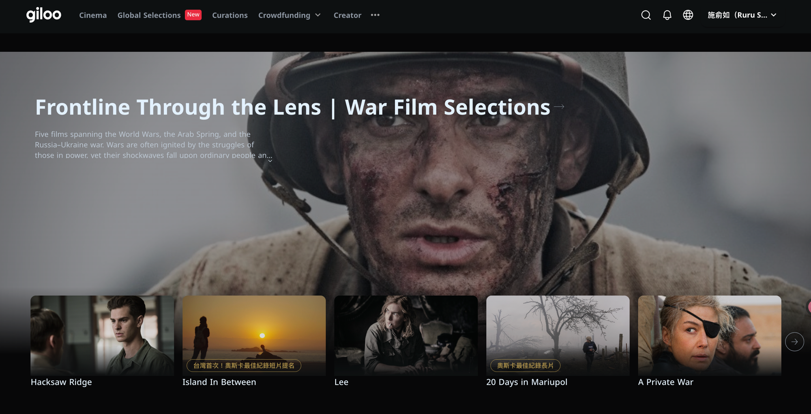

How films find audiences, unlock value, and drive impact. And what AI is about to change.
01
giloo
Introduction
To begin, let me briefly introduce Giloo.

Giloo is a Taiwan-based curation platform for documentaries, art-house films, and issue-driven films. We connect independent films with the right audiences across Asia, and we help filmmakers from around the world find their audiences here. But Giloo is not built only on having a large film library.
02
giloo
Built on Audience Relationships
It is built on audience relationships.
In a market the size of Taiwan, audience relationships give us something more valuable than reach and traffic.
They give us trust, engagement, and access to communities.
So, what do these audience relationships look like in numbers?
03
giloo
By the Numbers
280,000+newsletter subscribers
37%average open rate
2,000+creators and partners
9,000+curated film notes
Giloo has more than two hundred and eighty thousand newsletter subscribers, with an average open rate of thirty-seven percent.
We also work with more than two thousand creators and partners, and we have more than nine thousand curated film notes.
These numbers show that we have a strong and active audience. But they also point to the larger problem we are trying to solve.
04
giloo
The Problem
It is not a content problem. It is a distribution problem.
The industry already knows how to make more films. But it has not solved how the right audiences can discover them.
Many good films never reach the people who would love them. The film is already there, but no one helps people find it.
And this creates a distribution gap.
05
giloo
Distribution Gap
Access is not the same as audience understanding.
Most distribution reports tell filmmakers where a film was screened or released. But the harder question is: where is the next audience?
Giloo helps filmmakers see what happens after a release: who responded, who started talking, and where the story can travel next.
This is how we move from data to audience strategy.
06
giloo
From Data to Strategy
Data tells us what happened. Audience understanding tells us what to do next.
For issue-driven films, the value is not only exposure.
It is knowing where the story can travel next, what cultural context needs to be translated, and which market to enter first.
To understand the audience, the relationship cannot end after one screening.
07
giloo
Where Relationships Continue
Festivals gather an audience, but after the festival, everyone goes home.
Theaters sell a ticket, but the relationship often ends when the audience leaves.
A platform lets the audience choose to stay. They can follow a filmmaker, join a conversation, and come back for the next film.
And among these audiences, some people can carry a story even further.
08
giloo
Super-Spreaders
The most valuable audience members are not always the largest group.
They are the people and communities who host screenings, use films in teaching, organize conversations, and bring stories into new spaces.
We call them super-spreaders.
But for a story to travel through these people, trust is important.
09
giloo
Trust Leads to Discovery
Films travel through people who believe in them.
On Giloo, audiences, creators, teachers, and community leaders can become Impact Partners.
They share films with people they already know. When they bring in new viewers, they earn part of the revenue.
This helps filmmakers reach new audiences through trusted voices.
And it means that every release can help build the next audience.
10
giloo
Every Release
A release should not be the end of a film's journey.
Each film should build an audience relationship that can continue into the next story, the next issue, and the next community.
Our data also showed us something important about what these audiences want to watch.
11
giloo
What the Data Showed
People still watch serious stories.
Many people think audiences only want short videos and quick content.
But on Giloo, some of our most-watched films focus on serious social issues, cultural trauma, and communities that are often not seen.
Let me show you three examples.
12
giloo
Issue-Driven Cinema · 01
Island in Between
金門 · 2023 · dir. S. Leo Chiang · Academy Award nominee, Best Documentary Short
The first film is Island in Between, directed by S. Leo Chiang. Kinmen is a small island between Taiwan and China. In the film, Leo returns to Kinmen to look at his identity, his family story, and Taiwan's place in the world. The film was nominated for the Academy Award for Best Documentary Short, becoming Taiwan's first Oscar-nominated documentary.
The next film shows how a documentary can create impact in schools.
Island in Between poster
13
giloo
Issue-Driven Cinema · 02
And Miles to Go Before I Sleep
九槍 · 2022 · dir. Tsai Tsung-lung · Golden Horse Award, Best Documentary
Another example is And Miles to Go Before I Sleep, directed by Tsai Tsung-lung. The film is based on a real case in Taiwan. A Vietnamese migrant worker was shot and killed by the police. He was shot nine times. The film had a strong impact in Taiwan, especially in schools. Teachers used it to help students understand migrant workers, labor rights, and basic human rights. Often, people are afraid because they do not understand. Film can help build that understanding.
The third example opened another difficult but important conversation.
And Miles to Go poster
14
giloo
Issue-Driven Cinema · 03
Black Box Diaries
黑箱日記 · 2024 · dir. Shiori Itō · Academy Award nominee, Best Documentary Feature
The third example is Black Box Diaries. A journalist shares her story after sexual assault. The film looks at justice, courage, and the fight to tell the truth. It was not available to general audiences in Japan, but it received a powerful response in Taiwan. It connected with Taiwan's own MeToo experience and opened a deeper conversation about how society often questions survivors instead of supporting them. The film asks a difficult question: when someone speaks about sexual violence, are we willing to listen, and are we willing to believe them?
These three films are very different, but we saw the same audience behavior.
Black Box Diaries poster
15
giloo
What We Saw on Giloo
After people watched, the conversation continued.
They shared their reactions, discussed the issues, and brought more people back to watch.
That is what Giloo is built for.
From this audience behavior, we learned three things.
16
giloo
What We Learned · 01
First, curation can beat the algorithm.
For a niche film, a trusted person pointing to the right film can be more powerful than a recommendation feed.
Our second lesson is about what people are willing to pay for.
17
giloo
What We Learned · 02
People pay for meaning.
Audiences are willing to pay for issues and ideas, not only for entertainment.
Our third lesson is about how films travel.
18
giloo
What We Learned · 03
Community can reach people better than advertising.
A film can travel further through people who love it than through a large advertising budget.
When these conversations begin, we can turn them into programs.
19
giloo
Turning Conversations Into Programs
Together with our partners, we turn real social issues into online film festivals.
These programs can focus on human rights, justice, the environment, migrant workers, social movements, and many other issues.
This is also something we can build with new partners.
Here are some examples of what those partnerships have created.
20
giloo
Impact Through Partnership
Over the years, Giloo has built dozens of issue-based online film festivals with partners.
Each program brings films, communities, and audiences together.
This work begins in Taiwan, but Taiwan is only our starting point.
21
giloo
Taiwan Is Where We Start
We start in Taiwan because this is where Giloo understands the audience best.
Here, we can see how people respond to a story, what context they need, and which communities are ready to join the conversation.
Once we understand how a story moves in Taiwan, we can help it find its next audience across Asia.
But the same story may need a different entry point in each market.
22
giloo
Which Audience, Which Market
So the question is not only when to release a film.
The real questions are: which audience should we begin with? How should we frame the story? Which community should we work with? And which market should come first?
Today, finding these answers still requires a lot of manual work.
23
giloo
The Work Is Still Manual
Teams need to find the right audience, the right partner, and the right moment.
For most independent filmmakers, this work is still slow, expensive, and done by hand.
This is where AI can make a difference.
24
giloo
What AI Changes
AI can help a small team do work that once required a full campaign team.
It does not replace curators, filmmakers, or community partners.
Instead, it helps small teams understand audiences, localize context, and activate communities.
In this way, AI may open a new chapter for film.
25
giloo
The Answer Is AI
For the first time, a finished film may be able to reach audiences across markets without a studio, a sales agent, or the same limits of language.
But AI cannot do this well with prompts alone.
AI needs context.
26
giloo
AI Needs Context
Giloo's AI work is built on the foundation we already have: audience behavior, partner networks, curated film notes, and experience in issue-based programming.
This context makes AI useful for impact and distribution, not only for generating content.
So, what could this look like for a filmmaker?
27
giloo
For Filmmakers: Start with Your Film
It starts with the film.
First, the filmmaker uploads a finished film to Giloo.
Second, AI creates subtitles and translates the film for different markets.
Third, AI suggests the audiences, communities, and regions to begin with. It can also suggest where the film should be distributed first.
In simple terms: upload once, and prepare to reach more places.
This can create three kinds of value for filmmakers.
28
giloo
What AI Empowers
First, they can reach new markets.
AI can help films cross language barriers and reach audiences in new regions.
Second, they can create new income. Both finished films and upcoming projects can open new ways to earn revenue.
Third, filmmakers can build their own fanbase. They can grow an audience that stays with them beyond one film.
Now that we have looked at why this matters, let's move to how it works.
29
giloo
From Why to How
Now, let's open the kitchen.
Next, we will show how Giloo helps filmmakers upload their work, reach new audiences, connect with communities, and grow across markets.
Thank you.
30
giloo
Appendix · How It Works
Four steps to reach more audiences.
01 · Become a partner
Any Giloo member can activate Impact Partner status.
02 · Choose a film
Pick from the catalog: documentaries, festival titles, shorts, and animation.
03 · Recommend it your way
We provide materials and post templates to share it with the right audience.
04 · Track and earn
Every rental or new subscription through your link is tracked, and you earn a share.